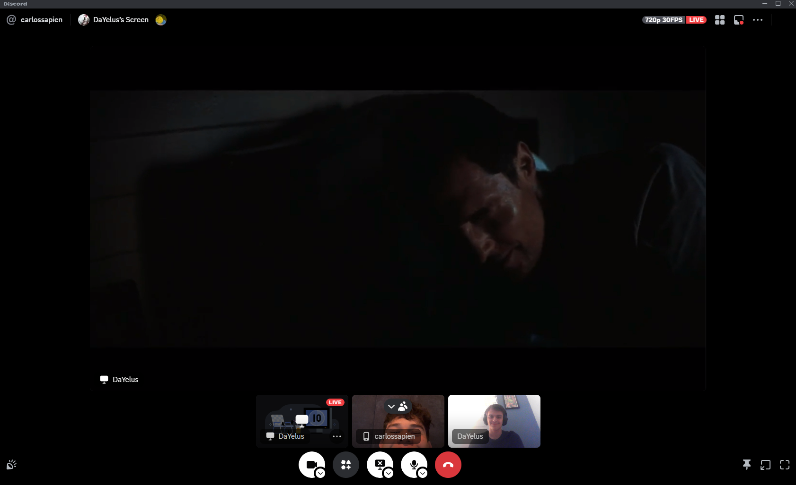

Película: Interstellar
Septiembre 27, 2024 publicado por Equipo Sustentabilidad
Interestellar (2014) nos lleva a un futuro distópico en el que la Tierra enfrenta una crisis ambiental sin precedentes. Las cosechas están fallando, y las tormentas de polvo hacen que la vida en el planeta se vuelva insostenible. En este escenario, la supervivencia de la humanidad está en riesgo, lo que impulsa la búsqueda de un nuevo hogar en el universo. Cooper, un ex piloto de la NASA, es llamado a liderar una misión interestelar junto a un equipo de científicos. Su objetivo: encontrar un planeta habitable a través de un agujero de gusano cercano a Saturno.
La película está llena de dilemas éticos y emocionales, desde la separación de Cooper de su familia hasta la desesperada búsqueda de soluciones para garantizar la supervivencia humana. A medida que viajan por el espacio y exploran planetas desconocidos, el equipo enfrenta decisiones que afectan no solo su misión, sino también el futuro de la humanidad. La combinación de ciencia y emotividad crea un relato que invita a reflexionar sobre nuestro futuro, nuestras decisiones, y las consecuencias de nuestros actos sobre el medio ambiente.
Relación con la sustentabilidad:
Interstellar aborda directamente las consecuencias de no cuidar el medio ambiente y la
falta de sostenibilidad en la gestión de los recursos. Muestra un futuro donde el cambio
climático y la degradación ambiental han hecho la Tierra casi inhabitable, lo que
subraya la importancia de adoptar soluciones globales para asegurar la supervivencia.
ODS presentes en la película:
- ODS 2: Hambre Cero: La crisis alimentaria mundial reflejada en la
película enfatiza la importancia de garantizar sistemas alimentarios sostenibles.
- ODS 6: Agua Limpia y Saneamiento: Aunque no se menciona directamente,
la falta de agua limpia es un riesgo en un entorno postapocalíptico.
- ODS 13: Acción por el Clima: La devastación causada por el cambio
climático es un tema central en la película, mostrando los peligros de no actuar a
tiempo.
- ODS 15: Vida de Ecosistemas Terrestres: La destrucción del ecosistema
en la Tierra refleja la importancia de proteger nuestros recursos naturales.
- ODS 9: Industria, Innovación e Infraestructura: La misión espacial es
un ejemplo de cómo la innovación puede ser clave para abordar problemas globales.
- ODS 12: Producción y Consumo Responsable: La película muestra cómo el
consumo excesivo de los recursos terrestres puede llevar a la destrucción del planeta.
La película nos recuerda la urgencia de aplicar los Objetivos de Desarrollo Sostenible para evitar un futuro similar al que se presenta en Interstellar, donde el colapso ambiental obliga a la humanidad a buscar soluciones desesperadas.
 ODS . Sostenibilidad . Medio Ambiente